Earth Engine 101 - Introduction to the API
This work is licensed under a Creative Commons Attribution 4.0 International License.
Copyright 2016-2019, Google Earth Engine Team
This following is a sequence of example scripts designed to be used as an introduction to the Earth Engine API, run as a hands-on workshop. The scripts are small, and generally build upon each other.
It takes at least 90 minutes for students to work through the entire series. This may take longer if you have a large group, if the students are new to programming, and/or you do not have teaching assistants to help students who fall behind.
Section list
Setup - Steps to do in advance of the workshop
Introduction - Code Editor
Section 0 - Javascript Syntax
Section 1 - Client vs. Server objects
Section 2 - Hello, Images
Section 3 - Computations on images
Section 4 - Spatial reductions
Section 5 - Image Collections
Section 6 - map()ing
Section 7 - Functions (and computing NDVI)
Section 8 - Reducing Image Collections
Section 9 - Compositing (more reducing)
Section 10 - Classification
Section 11 - Charting
Section 12 - Exporting
Section 13 - User interfaces
Section 14 - Object based methods
Where to go next…
Setup - Steps to do in advance of the workshop
Sharing the Scripts
The scripts are designed to be easy enough to type in as you go along. Each section only adds a few lines to previous sections. However, students may fall behind for a number of reasons. To account for this, it is advisable to setup a folder of scripts that you can share with everyone in the workshop.
- In the Earth Engine Code Editor
- Create a repository named "EVENTNAME - EE101"
- Populate the repository with scripts. As a template, you many want to start with scripts in this repository.
- If you don't care whether anyone can see the repository, check the 'Anyone can read' box and then click 'Done'. Share the link shown in the repository configuration with the participants. (...?accept_repo=...) It may help to create a shortlink for that. You're done!
- If you want to limit access to the repository, proceed to 2.
- Create a Google group for your workshop.
- Name it something similar to "EVENTNAME - Earth Engine 101"
- Add a description: “A group for attendees of the session Earth Engine 101 at the XXXXX workshop.”
- View topics: Owners of the Group
- Post topics: Owners of the Group
- Join the group: Public
- Create a shortlink to the group: Example: https://goo.gl/xaJprS
- Add the Google Group as an viewer of the repository. You can find the Google group email address under Information -> General Information -> Group email address
- Copy the link to accept the repository and make another shortlink.
- Google Presentation
- Create a slide deck for displaying the shortlinks for joining the Google Group and accepting the repository.
Getting started
Have participants do the following:
- Open up an Incognito window
- Navigate to the Join the Group link.
- Join the group. (Don't worry about posting permissions.)
- Accept the shared repository at the accept_repo link.
Introduction - Code Editor
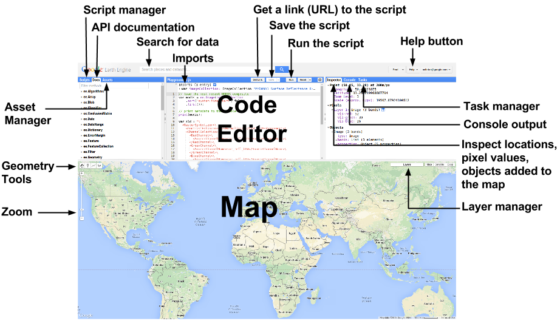
Give participants a brief overview of the various panels of the Earth Engine code editor: https://code.earthengine.google.com/. It's not worth spending a huge amount of on this because the rest of the training will use most of these pieces. However, it is worth noting that the Code Editor uses the javascript client API to make requests to the server. The key point is that the Code Editor runs in the browser and all the hard processing is done on Google Servers. Also, there are Code Editor docs.
- Editor Panel
- The Editor Panel is where you write and edit your Javascript code.
- Note that the Run button executes the code.
- Right Panel
- Console tab for printing output.
- Inspector tab for querying map results.
- Click on the map and note that there is a scale in meters associated with the zoom level.
- Tasks tab for managing long-running tasks.
- Left Panel
- Scripts tab for managing your programming scripts. These are git repos hosted at Google.
- Docs tab for accessing documentation of Earth Engine objects and methods, as well as a few specific to the Code Editor application. This is the definitive API reference and is populated by the server.
- Assets tab for managing assets that you upload. You get 250 GB free.
- Interactive Map
- For visualizing map layer output.
- Note layer controls.
- Note the geometry tools.
- Search Bar
- For finding datasets and places of interest.
- Get Link button
- A static snapshot of the Code Editor at the time the button is clicked. If you change the code, get a new link. You can email these around for easy collaboration.
- Help Menu
- User guide - reference documentation
- Help forum - Google group for discussing Earth Engine
- Shortcuts - Keyboard shortcuts for the Code Editor
- Feature Tour - overview of the Code Editor
- Feedback - for sending feedback on the Code Editor
- Suggest a dataset - Our intention is to continue to collect datasets in our public archive and make them more accessible, so we appreciate suggestions on which new datasets we should ingest into the Earth Engine public archive.
**NOTE: All the code in the following is from https://code.earthengine.google.com/?accept_repo=users/nclinton/EE101
Section 0 - Javascript Syntax
Beginning users (especially if new to programming) often confuse commas, periods, semi-colons, parentheses, square and curly brackets. An understanding of these syntactic elements is key to making Earth Engine work. Lead the user through basic JavaScript, including Hello World!, strings, numbers, comments, lists, objects (dictionaries), functions, etc.
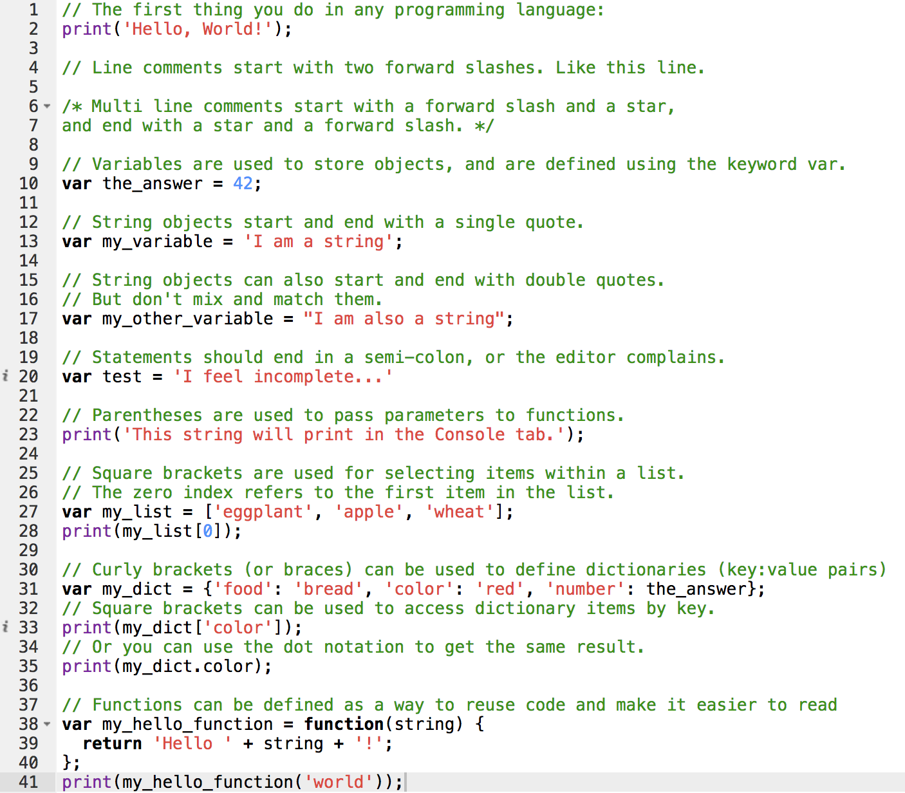
Important points:
- Demonstrate Get Link button and/or Save button.
- These are client objects in browser JavaScript. See next section.
Section 1 - Client vs. Server objects
Everything in the previous section was a client-side object that lives in the browser. Client-side code is useful for a great many things, and is often necessary, for example when programming user interfaces for Earth Engine. However, client-side objects are NOT to be confused with server-side objects as demonstrated by the following. Start with some client side objects and wrap them with server side constructors (ee.Anything) to turn them into a server side objects. Break things.
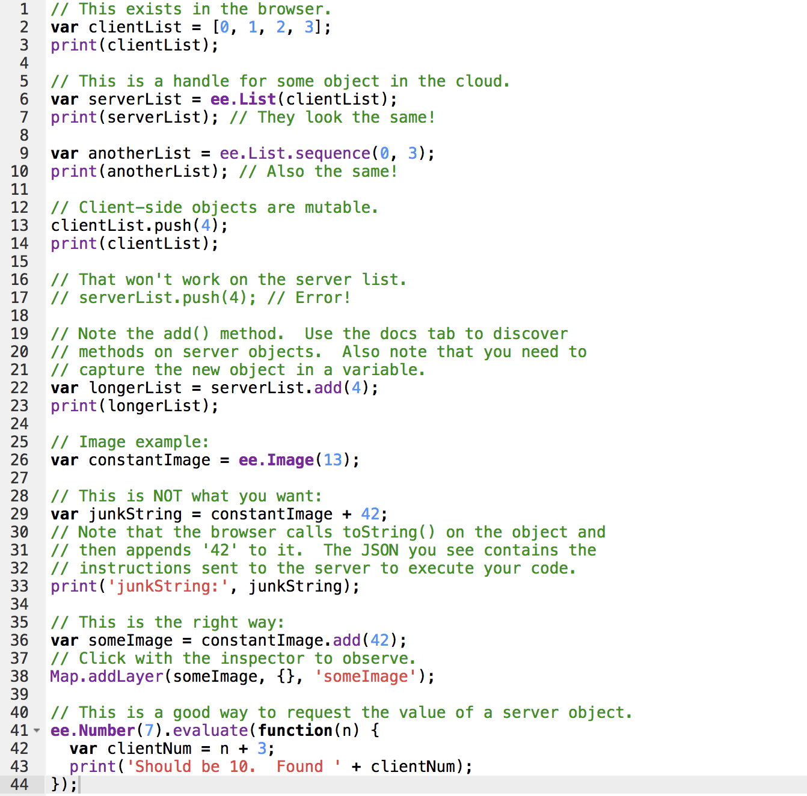
Important points:
- Printing something asynchronously requests the value of the object from the server. To get the value in code, use evaluate(). Do NOT use getInfo(), which is synchronous and can cause the browser to lock.
- Read the Client vs. Server docs. See also the debugging doc.
Section 2 - Hello, Images
Start over by opening a new tab. Search for imagery, find it and display it, with increasingly detailed visualization parameters.
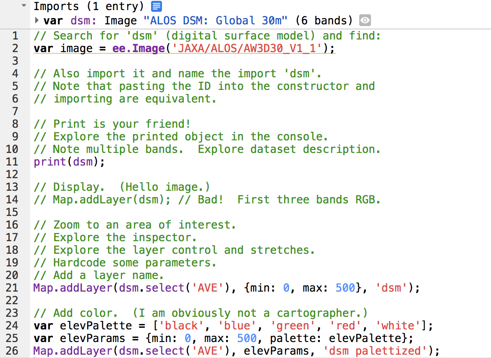
Important points:
- Note the equivalence of import and the image constructor by clicking the list icon next to the imports.
- Inspect image bands in the console or 'Object' section of the Inspector. Look at the dataset description to understand the bands.
- Fiddle with the visualization parameters for your area of interest.
- Read the image visualization docs.
Section 3 - Computations on images
Start from the previous (section 2) script or at least the same import (ALOS DSM named dsm). Demonstrate several frequently-used operations. You may need to fiddle with the thresholds for your area of interest.
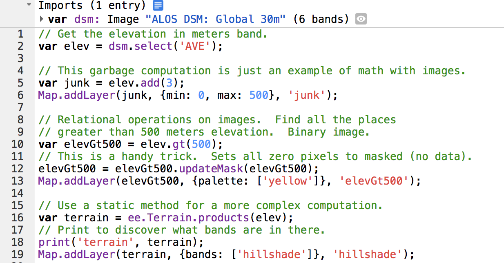
Important points:
- Demonstrate search for a specific locations.
- Look at the documentation tab (e.g. ee.Terrain.products())
- Deferred execution and parallelization: pan around and watch tiles getting computed on-demand. (Doc)
- Scale: zoom the map and note that different computations take place at different scales. (Doc)
Section 4 - Spatial reductions
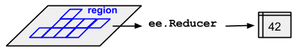
A reducer is an Earth Engine object that represents a way of aggregating data or computing a statistic. Demonstrate spatial reductions. Start from the section 3 script which should have terrain and a mask already in it. The mask is the elevGt500 threshold image. Select the polygon geometry tool and draw a triangle (or more complex polygon) on the map over a place where elevGt500 is true (1). Somewhere after the section 2 code, add this:
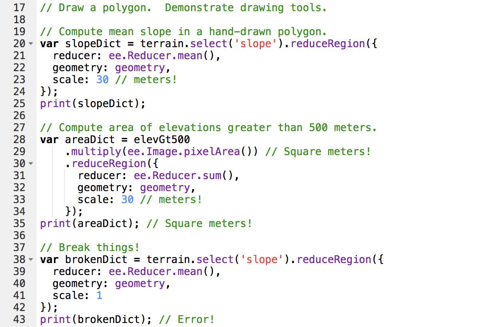
Important points:
- Demonstrate autocomplete for reduceRegion() signature. Discuss named parameters.
- Fixing brokenDict:
- It's ridiculous to do this in the first place. But you can do it because Earth Engine will resample the input (nearest neighbor by default) to whatever scale you specify. So we're getting 900 little pixels in each native 30 meter pixel.
- Fix 1: change scale back to 30.
- Fix 2: add maxPixels: 1e9 to the reduceRegion() arguments.
- Fix 3: add bestEffort: true to the reduceRegion() arguments.
- Note: setting bestEffort will recompute scale such that maxPixels is not exceeded. This is useful for quick and dirty statistics, but not much else, since you won't know the scale at which your computation occured.
- The scale of the computation is set from the output. Inputs are resampled as necessary to the scale set in the output. Always specify scale!
- The scale parameter is always in meters.
- The output of reduceRegion() is a dictionary, keyed by band name, with the values the output of the reducer in each band. That's why the threshold image is renamed.
- Read the reduceRegion() docs.
- The plural of reduceRegion() is reduceRegions() which takes a FeatureCollection as input. (Doc)
Section 5 - Image Collections
Start over on a new tab. Search for 'Landsat 8 surface reflectance' and import the Tier 1 dataset. Then filter and sort in various ways.
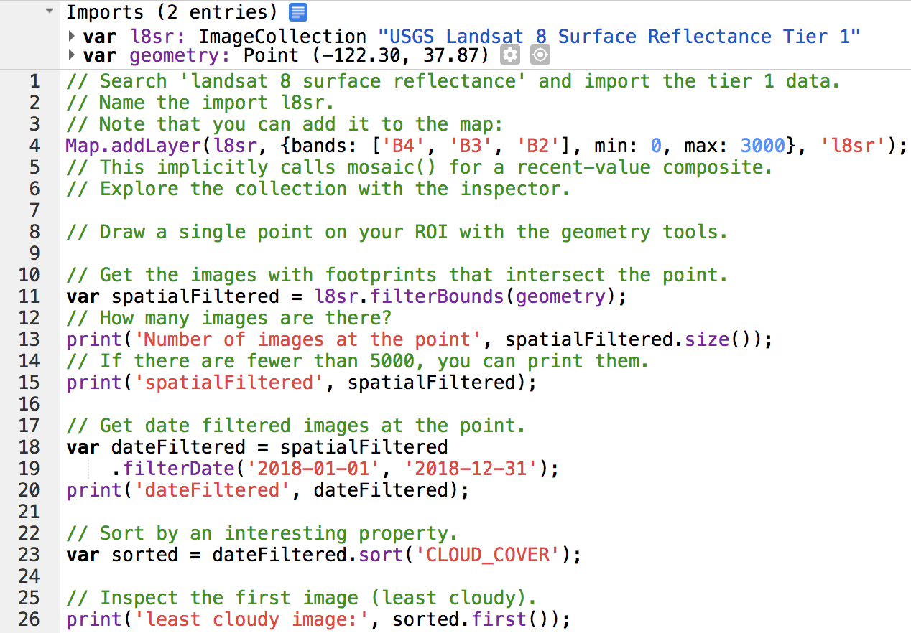
Important points:
- Note that you can add an ImageCollection to the map. Explore it with the inspector.
- You can print image collections and inspect the image objects inside there (you can print a collection as long as it's fewer than 5000 elements).
- You can programatically isolate images (if that's your thing) by time, location and/or metadata.
Section 6 - map()ing
Mapping a function over a collection is key to making Earth Engine work. Start from the previous section or at least the same imports. Map a simple function over a list. Use the list for something useful (making annual composites). Break things.
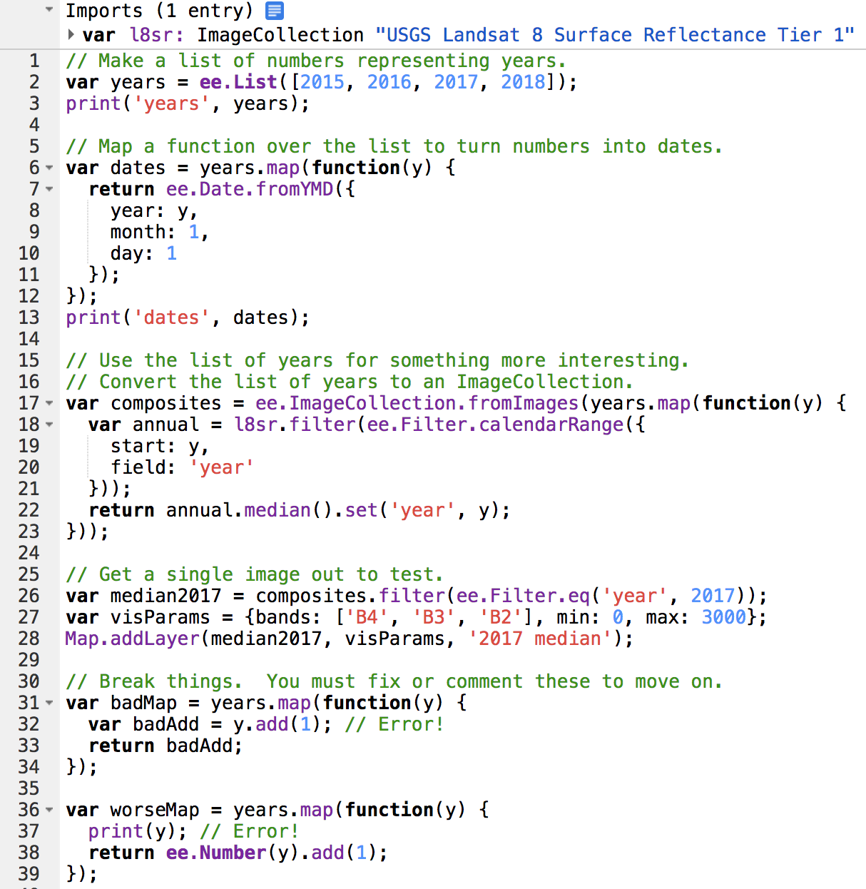
Important points:
- Use map() instead of for-loops for applying an operation to every element of a collection. (You still need for-loops for some client-side things, such as user interfaces.)
- Fixing the broken map()s.
- Mapped functions don't necessarily know what's in the collection over which they're being mapped. The solution is to cast the argument to the function, i.e. ee.Number(y).add(1);
- You can't call a client function (e.g. print(), Map.anything(), ui.Chart.anything() ) in a mapped function.
Section 7 - Functions (and computing NDVI)
Start from the previous script. Make a function to compute NDVI. Test the function on the first thing in a collection. Map the function over an image collection.
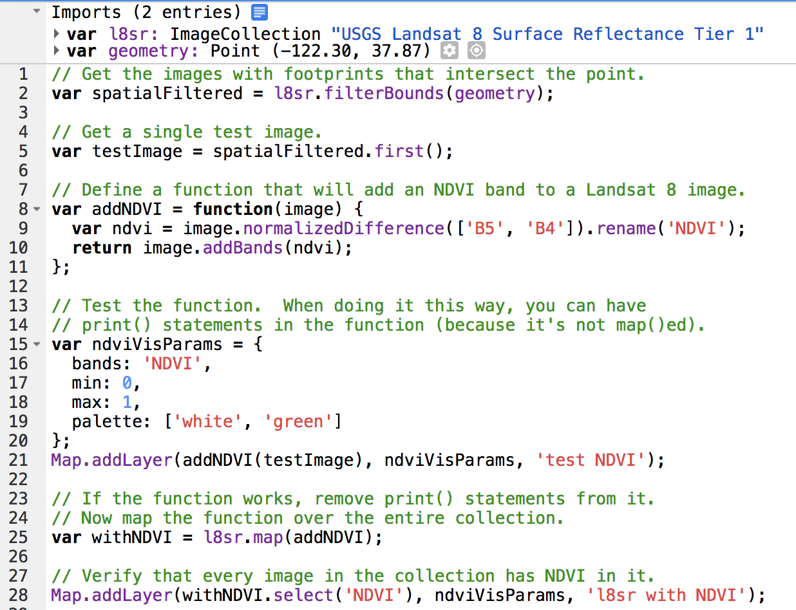
Important points:
- Debug mapped functions on the first thing from a collection. (Doc)
Section 8 - Reducing Image Collections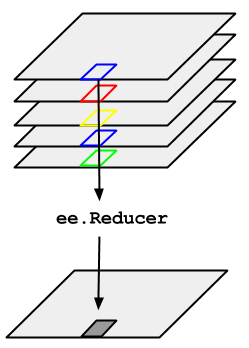
Previously, spatial reductions were demonstrated in which the inputs to the reducer are pixels in a spatial region (Section 4). If images in a collection represent observations over time, reducing an ImageCollection is a temporal reduction. In this case, a stack of pixels over time is input to the reducer. Demonstrate several ways to reduce() the collection of images with NDVI.
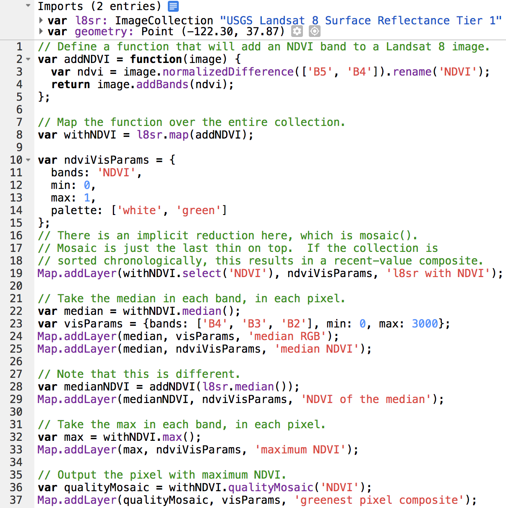
Important points:
- image.median() is a shortcut for image.reduce(ee.Reducer.median()). The latter annoyingly appends the reducer name to the output bands (and is also more typing).
- The reducer is applied separately to each band and each pixel. As a consequence, output pixels may not have ever been measured by the sensor. Different bands may come from different times and bands in adjacent pixels may also come from different times. This can be biased by seasonality, cloudiness, missing data, etc. You've been warned!
- qualityMosaic is also called a greenest pixel composite. The pixels in this composite were measured by the sensor. They are whatever pixels in the stack have the highest NDVI. That might be useful for ensuring real pixels, or controlling for phenology, but also result in unsatisfactory results over water. The moral is that there's no perfect solution to compositing.
- See the Docs tab for a list of all the reducers available.
Section 9 - Compositing (more reducing)
Now that mapping a function over a collection and reducing the result has been demonstrated, it's possible to understand the Code Editor Cloud Masking examples. Go through all those. These are just mapping a function over the collection to mask clouds, then reducing. Here is ee.Algorithms.Landsat.simpleComposite() compared to a pared down surface reflectance example (it's safe to copy-paste the Landsat 8 Surface Reflectance example instead).
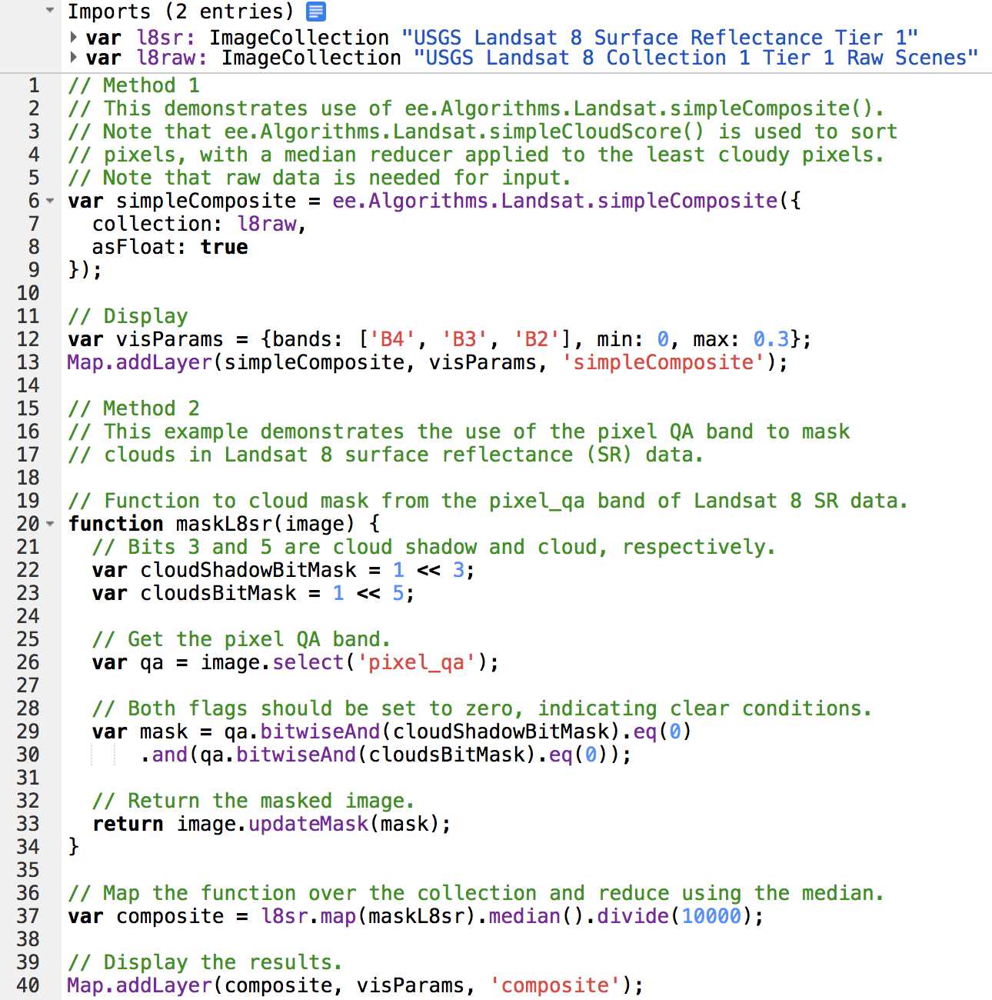
Section 10 - Classification
Start over. Go to the Scripts tab > Examples > Cloud Masking > Landsat8 Surface Reflectance. (You can use any of these examples or one of the composites you already made; you may need to adjust the bands used.) Label data are in the form of a FeatureCollection in which each Feature has a property storing its label (e.g. vegetation, bare, water). When predictors are added to the label, it's training data for a classifier. Use bands of the composite as predictors. Add this to the end of the cloud masking example:
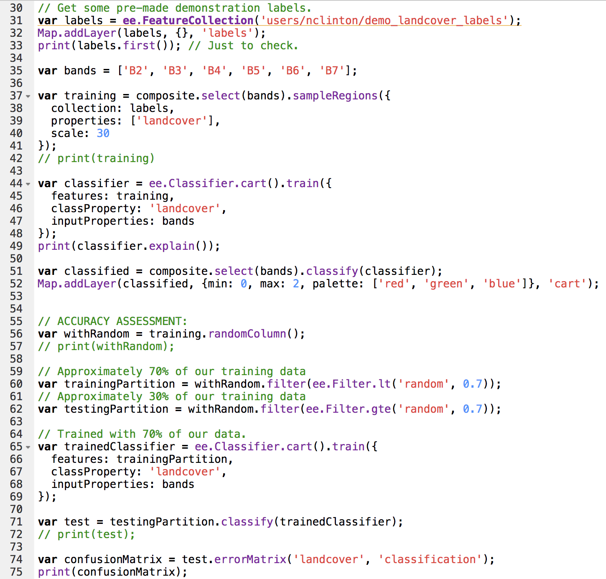
*Note that there's also charting and ensemble prediction in the EE101 repository.
Important points:
- The input imagery can be anything, but you need to specify the right bands to use.
- The label data can be anything, but you need to specify the right property to use in the label features.
- You can get label data manually using the geometry tools, but you need to configure how they're imported (script).
- There are constraints in terms of number of features, number of bands, size of the classifier (e.g. number of trees in a random forest or number of depth of a CART).
- You can only do explain() on a CART.
Section 11 - Charting
You can do this for any image collection with NDVI in it. See also the charting example in the classification section.
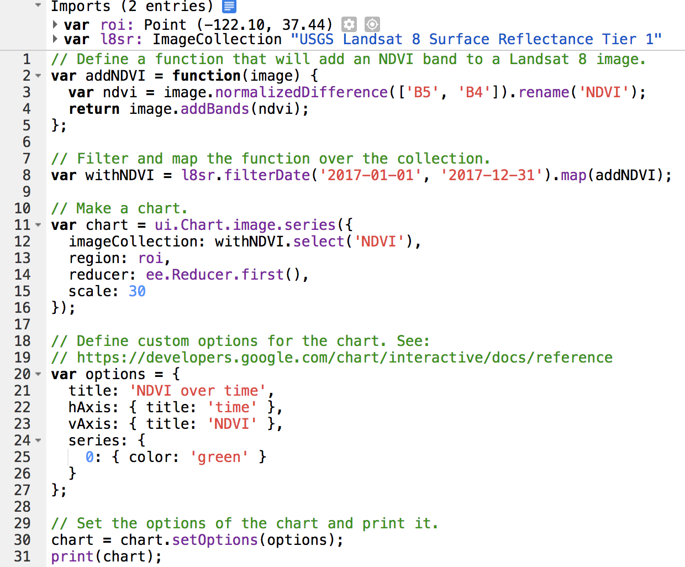
Important points:
Section 12 - Exporting
This can be demonstrated on any Image and/or FeatureCollection. It's useful to have some visualization parameters lying around with which to demonstrate visualize(). Draw a polygon (not too big) over some area of interest, name it geometry. Start the tasks, click run, and discuss as you wait for the results to materialize in Drive.
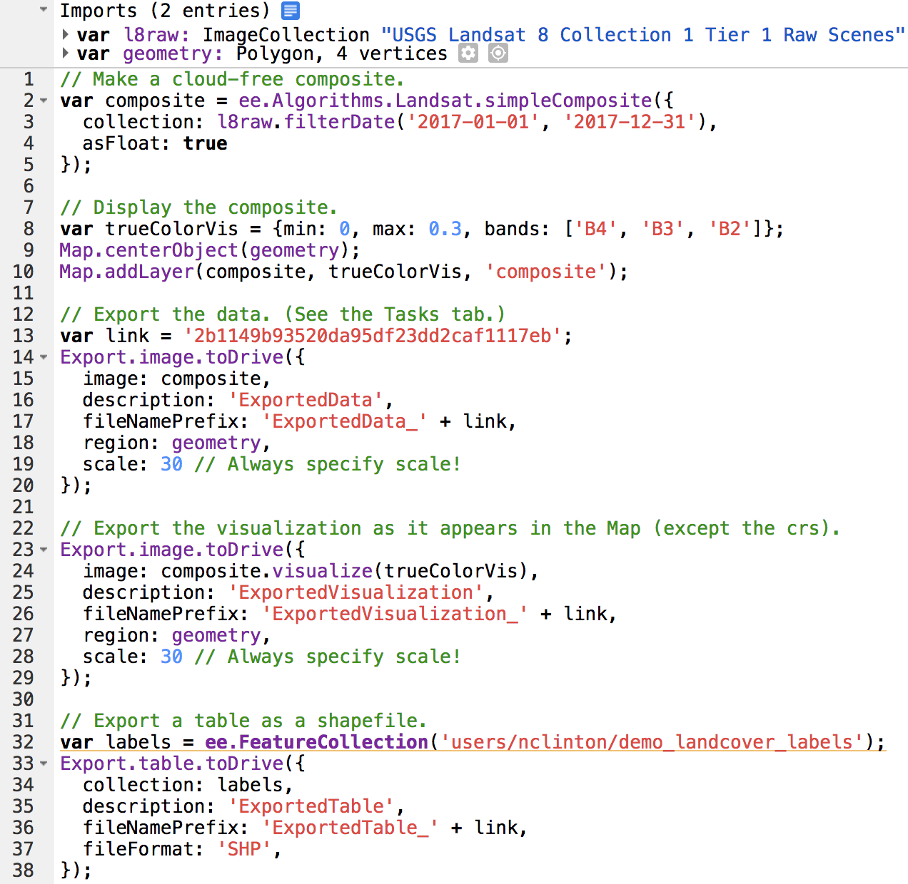
Important points:
- This is not the only destination for exports. See the Export docs.
Section 13 - User interfaces
Here is a very simple example from https://code.earthengine.google.com/?accept_repo=users/nclinton/ui-api-101
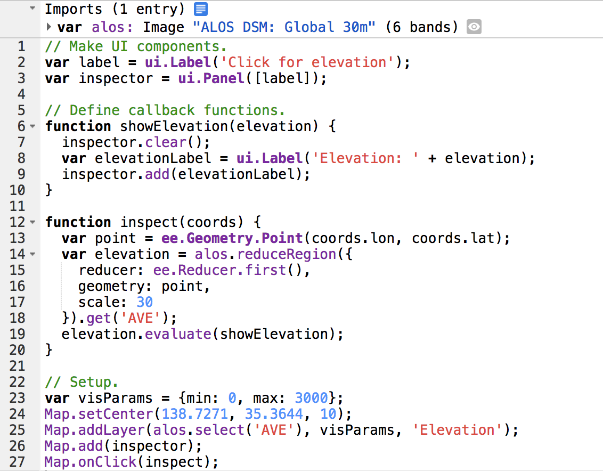
Important points:
- You need to use client-side functions and objects to program a UI.
- Use evaluate() to get the value of things from the server without locking your app.
- See the UI docs and the App docs.
Section 14 - Object based methods
See demo repo script.
Where to go next…
- Read through the Earth Engine docs. Read through the Introduction and Get Started sections, work your way through the API tutorials, and then dive deeper into any concepts that you are interested in. From the Javascript Playground, the docs can be accessed via the menu Help -> User guide.
- Join and participate in the Google Earth Engine Developers forum, where Earth Engine users post and answer questions about the platform.